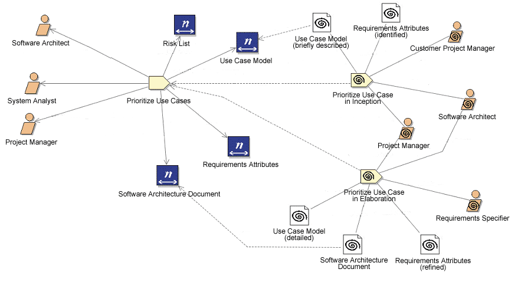

| Concept: Descriptor |
 |
|
A Descriptor represent an occurrence of one concrete Content Element (such as Task, Role, Work Product) in an Activity. Descriptors provides a proxy-like representation for these Content Elements within breakdown structures. In addition to just referencing Content Elements it allows overriding the Content Elements' structural relationships by defining its own sets of associations. Descriptors are a key concept for realizing the separation of Processes from Method Content. A Descriptor can be characterized as a reference object for one particular Content Element, which has its own relationships and properties. When a Descriptor is created, it has the same relationships as the referenced Content Element. However, users can modify these relationships for the particular process situation for which the Descriptor has been created. The Descriptor concept allows defining new relationships and specific process related properties. Descriptors are not Content Elements and do not contain their own full descriptions. They refer or trace back to the Content Elements they are based on instead. Example
 Example of Method Content referenced by Descriptors
|
© Copyright IBM Corp. 1987, 2005 All Rights Reserved |